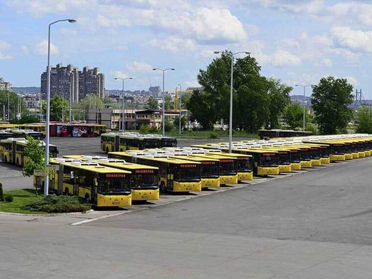
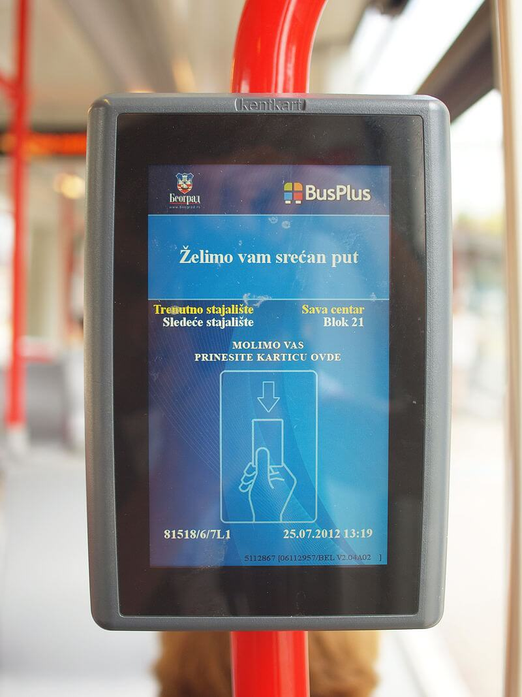
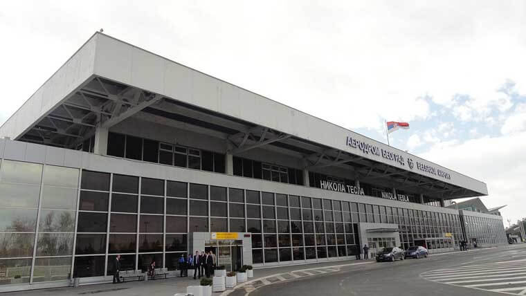
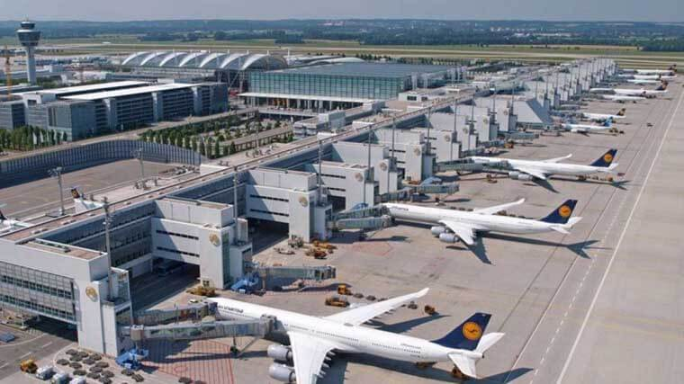
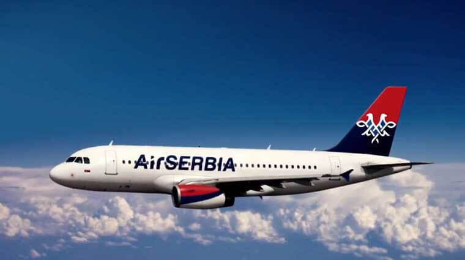

Prevoz
Drumski i šinski transport
Javni gradski prevoz u Beogradu obuhvata prevoz autobusima, tramvajima i trolejbusima na oko 130 linija.
Vozila su u vlasništvu Gradskog saobraćajnog preduzeća (GSP Beograd) ili privatnih preduzeća. Svi prevoznici imaju jedinstveni sistem karata, mesečnih ili pojedinačnih. Karte se mogu kupiti na većem broju trafika, širom grada. Pojedinačne karte se mogu kupiti i kod vozača po višoj ceni, važe za vožnju jednim vozilom i poništavaju se neposredno po ulasku ili kupovini u autobusu.
Za korišćenje prevoza putnik je dužan da u vozilu poseduje važeću voznu ispravu i da je na zahtev ovlašćenog lica prevoznika pokaže. U slučaju prekida saobraćaja ili kvara vozila prevoznik je dužan da putnicima omogući da istim kartama mogu da nastave započetu vožnju drugim vozilom.
Podsistem karata za prevoz
Podsistem karata za prevoz zasnovan je na RFID tehnologiji sa elektronskim beskontaktnim smart karticama kao medijumom plaćanja usluga.
Osnovu sistema plaćanja prevoza čine:
- Plastična beskontaktna (personalizovana ili nepersonalizovana) kartica kupljena kroz sistem pretplate ili u prodajnoj mreži pre ulaska u vozilo, koja se kasnije samo dopunjava. Kartice se obavezno overavaju (oćitavaju) prilikom ulaska u vozilo.
- Papirna beskontaktna kartica ograničenog vremenskog trajanja (1 dan, 3 dana ili 5 dana od momenta kupovine), koja se obavezno overava (očitava) prilikom ulaska u vozilo.
- Papirna karta kupljena kod vozača za jednu vožnju koju nije potrebno overavati (očitavati).
Karte se kupuju pre vožnje na jednom od prodajnih mesta.
Postoje 2 tipa prodajnih mesta:
- Mesta za izdavanje personalizovanih kartica i
- Mesta za prodaju nepersonalizovanih kartica i dopunu svih vrsta kartica.
Putnik koji nema kartu mora ući na prva vrata i kupiti kartu kod vozača. U tom slučaju se preporučuje da putnik pripremi tačan iznos koji je neophodan za kupovinu karte.
Sve karte u sistemu, osim papirnih karata kupljenih kod vozača, moraju da se očitaju prilikom ulaska u vozilo na validatorima koji se nalaze u zoni vrata – Check In sistem naplate.
Beskontaktne kartice
Beskontaktne kartice predstavljaju elektronsko sredstvo plaćanja. Beskontaktne kartice čuvaju informacije o poslednjim vožnjama – naplatama. Kartice rade na kratkim rastojanjima komunicirajući sa validatorima, odnosno uređajima za dopunu i kontrolu.
U sistemu postoje dve vrste beskontaktnih kartica:
- personalizovane smart kartice i
- nepersonalizovane smart kartice.
Personalizovane smart kartice
Personalizovane kartice sadrže lične podatke korisnika kao i fotografiju korisnika radi vizuelne kontrole.Na personalizovane kartice vrši se upis vremenski ograničenih pretplatnih karata (mesečnih, polumesečnih i godišnjih). Svi korisnici uplatom iznosa predviđenog za mesečne odnosno polumesečne ili pak godišnje dopune imaju pravo na neograničen broj vožnji na svim linijama u ITS 1 i/ili ITS 2 u izabranim zonama u dnevnom saobraćaju (od 04:00 do 24:00 časa).
Personalizovane kartice nisu prenosive na drugog korisnika.
Personalizovane kartice se moraju očitati prilikom ulaska u vozilo kako bi bile ispravne prilikom kontrole. Putnici kojima firme uplaćuju mesečnu pretplatu za prevoz, prilikom prvog očitavanja na početku meseca, neophodno je da karticu duže zadrže na validatoru kako bi se dopuna prenela na karticu. Mesečna pretplata kupljena na trafici, automatski je uneta na karticu i postupak dužeg zadržavanja nije potreban.
Personalizovane kartice izdaju se na ime korisnika uz odgovarajuću dokumentaciju u odnosu na kategoriju kartice.
Pregled kategorija i potrebne dokumentacije.
Cenovnik dopuna personalizovanih BusPlus kartica.
Nepersonalizovane smart kartice – elektronski novčanik
Ovaj tip kartica predstavlja elektronski novčanik za vožnju u javnom prevozu. Korisnik dopunjuje karticu željenim novčanim iznosom, a pri svakoj ostvarenoj vožnji sa kartice se skida iznos koji predstavlja cenu te vožnje. Ove kartice imaju rok trajanja od 4 godine od dana prve dopune i mogu se dopunjavati neograničen broj puta na svim prodajnim mestima. Nepersonalizovane kartice se moraju očitati prilikom ulaska u vozilo, kako bi bile ispravne prilikom kontrole.
Nepersonalizovanu smart karticu je moguće registrovati na ime korisnika, ali je može koristiti i više korisnika.
U integrisanom tarifnom sistemu 1 (ITS1), prilikom očitavanja nepersonalizovane plastične smart kartice na validatoru, aktivira se osnovna vremenska karta od 90 minuta, koja važi od momenta prvog očitavanja pri čemu se umanjuje kredit na kartici za 89 dinara. Karticu obavezno treba očitati prilikom svakog presedanja.
Papirne beskontaktne kartice – vremenske karte za 1, 3 ili 5 dana. Nepersonalizovane papirne beskontaktne smart kartice kupuju se na kiosku i jednokratno dopunjuju kao vremenska karta
za jedan, tri ili pet dana, a važe od momenta dopune kartice 24, 72 odnosno 120 sati, osim u noćnom saobraćaju od 00 do 04h. Moraju se očitati prilikom ulaska u vozilo i pri svakom presedanju, kako bi
bile ispravne prilikom kontrole.
Cena vremenskih karata.
Veliki broj autobuskih, trolejbuskih i tramvajskih stajališta opremljeno je sistemom za obaveštavanje o dolasku vozila i broju stanica. Svako stajalište na teritoriji grada poseduje svoj kod, ukoliko vam je potrebna informacija o dolasku vozila potrebno je da u vaš mobilni telefon unesete sledeće: *011*brojstajališta# i dobićete tačnu informaciju za koliko stanica će određeno vozilo stići. Ukoliko se želite pripremiti unapred, na sledećoj stranici možete pronaći kompletan spisak stajališta sa kodom i nazivom stajališta.
U noćnom saobraćaju (00-04) karte su skuplje i kupuju se samo kod konduktera. Za noćni saobraćaj ne važi BusPlus sistem. Trase linija noćnog prevoza razlikuju se od trasa dnevnog saobraćaja i objedinjuju više linija koje opslužuju određene delove grada i prigradskih naselja. Polasci na noćnim linijama ostvaruju se na svakih sat vremena sa jednog od terminusa: Trg Republike, Slavija i Opština Novi Beograd.
Avio transport
Aerodrom Nikola Tesla Beograd (ranije poznat kao Aerodrom Beograd ili Aerodrom Surčin) najveći je aerodrom u Srbiji i važno čvorište saobraćajne mreže Beograda.
Aerodrom u čast Nikole Tesle od 2006. nosi današnje ime. Aerodrom se nalazi 18 km zapadno od centra Beograda. Sa aerodroma u redovnom avio-saobraćaju putnike prevoze 33 avio-kompanije ka 91
destinaciji u 38 država na 4 kontinenta.
Tesla je matično čvorište avio-kompanije Er Srbija, nacionalnog avio-prevoznika Republike Srbije. Aerodrom je baza niskotarifne avio-kompanije Viz er, zatim avio-službe Vlade Republike Srbije i avio-taksi kompanije Er Pink, Princ avijacija, Infiniti avijacija i Igl ekspres. Kroz aerodrom je 2017. prošlo 5.343.420 putnika.
Istorija
Istorija aerodroma u Beogradu počinje 1910. godine. Od tada do danas, letilište je menjalo lokaciju, raslo i razvijalo se. Prvo letilište u Beogradu nastalo je krajem 1910. godine na vojnom vežbalištu u predgrađu Banjica. Ovde su letenje avionom prikazivali pioniri avijacije — Simon, Maslenikov, Vidmar i Čermak.
Aerodrom Banjica
Početkom 1912. godine, na Banjici je podignut prvi drveni hangar za avione namenjen ratovanju sa Turskom. Dve godine kasnije na Banjici je stacionirana srpska aeroplanska eskadrila i balonska četa. Banjički aerodrom korišćen je posle Prvog svetskog rata za potrebe poštanskog saobraćaja na relaciji Skoplje — Niš — Beograd — Novi Sad i Beograd — Sarajevo — Mostar. U blizini mesta gde se nalazio ovaj aerodrom danas je Vojno-medicinska akademija (VMA).
Aerodrom Kalemegdan — Donji grad se nalazio na potezu od turskog amama (danas Planetarijuma) prema ušću Save u Dunav. Sa ovog mesta prvi avion poleteo je u januaru 1911. godine. Značajno je zbog toga što je na njemu 9. januara 1911 godine, samo šest meseci nakon prvog leta Subotičanina Ivana Sarića, pilot Edvard Rusjan na monoplanu konstrukcije Mijala Merćepa, poleteo nad kalemegdanskom tvrđavom.Međutim, usled snažnog vetra dolazi do loma krila i pada aviona na bedem pored reke, pored Nebojšine kule, pri čemu Rusjan tragično strada. Deo rebra s krila pale letelice i danas se čuva u Muzeju vazduhoplovstva. Aerodrom je korišćen i za obuku pitomaca vazduhoplovne akademije vazduhoplovstva Kraljevine Jugoslavije.
Aerodrom Pančevo
Avio-saobraćaj užurbano se razvijao nakon 1919. godine, ali je taj razvoj kod nas bio usporen, zbog toga što Beograd nije imao aerodrom. Kako je postojalo interesovanje društva CFRNA (jedna od kompanija od koje je nastao Er Frans) da jedna od etapa leta od Pariza do Carigrada bude u Beogradu, pokrenuta je inicijativa da se u Beogradu što pre podigne aerodrom. Usvojena lokacija pored Bežanijske kose zahtevala je znatne radove koji nisu mogli biti izvedeni za kratko vreme, zbog čega je doneta odluka da se u blizini Pančeva izgradi privremeni aerodrom. Prvi avion na ovaj aerodrom sleteo je 25. marta 1923, dok je zvanično putnički i poštanski saobraćaj počeo 16. aprila 1923. godine. Aerodrom Pančevo ostaće upisan u istoriji svetskog vazduhoplovstva jer je sa njega obavljen prvi noćni let u istoriji. Kako su letovi od Pariza do Carigrada trajali koliko i putovanje čuvenim vozom „Orijent ekspres“, jedini način da avioni kompanije CFRNA razdaljinu između Pariza i Carigrada pređu za kraće vreme bio je da lete noću. Prvi let sa putnicima na noćnoj liniji izvršen je 2. septembra 1923. godine, što se smatra početkom noćnog vazdušnog saobraćaja u svetu.
Međunarodni aerodrom Beograd
Pokazalo se da nepovoljna lokacija aerodroma u Pančevu predstavlja smetnju za brži razvoj vazdušnog saobraćaja zbog udaljnosti od Beograda, a još više zbog lošeg saobraćajne povezanosti. Pošto u to vreme nije postojao most na Dunavu, putnici su iz Beograda morali brodom da putuju do Pančeva, a zatim autobusom do aerodroma, što je često trajalo duže nego let do Bukurešta. Međunarodni aerodrom „Beograd“ izgrađen je na livadi koja se zvala Dojno polje, između Bežanijske kose i leve obale Save, oko dva kilometra južno od Zemuna. Aerodrom je otvoren za saobraćaj u martu 1927. godine. Od februara 1928. godine sa novog aerodroma poleću i avioni prve domaće avio-kompanije, "Aeroputa“. Aerodrom je raspolagao sa četiri travnate poletno-sletne staze. Na njemu je 1931. godine izgrađena moderna pristanišna zgrada, a 1936. ugrađena je i oprema za sletanje pri slaboj vidljivosti. Razvoj aerodroma i domaćeg vazduhoplovstva nago je prekinut izbijanjem Drugog svetskog rata.
Tokom Drugog svetskog rata aerodrom su koristili Nemci. Oni su ga i porušili 1944. godine, pri povlačenju iz Beograda. Nakon rata, aerodrom je postepeno obnavljan, pristanišna zgrada delimično je prepravljena, a početkom 1946. godine izgrađen je novi prizemni objekat za prijem putnika. Početkom pedesetih godina produžena je betonska pista kako bi na aerodrom mogli da sleću tadašnji najveći avioni. Od aprila 1947. do 1962. godine ovaj aerodrom bio je baza nove domaće avio-kompanije Jugoslovenski aerotransport, kao i naša glavna kapija prema svetu.
Aerodrom Beograd
Pojava mlaznih putničkih aviona zahtevala je novo produženje poletno-sletne staze, za šta na postojećoj lokaciji više nije bilo prostora. Takođe, Novi Beograd trebalo je većim delom izgraditi na tadašnjoj lokaciji aerodroma. Zbog svega je za novi aerodrom u Beogradu izabrana lokacija u Surčinu. Poslednji letovi, koji su već vodili preko terasa novoizgrađenih kuća koje su okruživale aerodrom, izvršeni su početkom 1964. godine, kada su poslednji avioni JAT-a napuštali staru tehničku bazu i zauzimali mesto na prostranoj platformi novog aerodroma.Za lokaciju novog međunarodnog aerodroma izabran je prostor u blizini Surčina, 18 km zapadno od Beograda.
Izgradnja novog aerodroma počela je u aprilu 1958, a Aerodrom je pušten u saobraćaj 28. aprila 1962. godine. Bio je glavna tehnička baza Jugoslovenskog aerotransporta. Imao je jednu pistu dužine 3.000 metara, čija upotrebljivost u odnosu na vetar je iznosila 99,6%, rulnu stazu dužine 3.350 metara, betonske platforme za opslugu 16 aviona, pristanišnu zgradu od 8.000m2 za prijem putnika, robno skladište, kontrolni toranj i drugu savremenu opremu. Ugrađena je, u to vreme, najsavremenija navigaciona oprema, pa je aerodrom dobio najvišu međunarodnu klasu po ICAO standardima.
U periodu od 1979. do 1981. godine izgrađena je nova zgrada za prijem putnika (Terminal 2), uz neophodno proširenje platforme za prijem aviona i putnika. Time je kapacitet putničkog kompleksa proširen na do 5 miliona putnika godišnje. Usvojena tehnološka rešenja sa fingerima i avio-mostovima za prihvat aviona i putnika bila su veliki napredak i uvrstila su Aerodrom među najsavremenije aerodrome u svetu, a 1997. godine ugrađena je oprema za Kategoriju II i time omogućena upotreba aerodroma po lošijim vremenskim uslovima.
Na aerodromu „Nikola Tesla“ smešteno je preduzeće Jat Tehnika, operativna odeljenja Agencije za kontrolu letenja, Uprava i carina avio-kompanije Er Srbija, muzej vazduhoplovstva i školski centri avio-kompanije Er Srbija i Agencije za kontrolu letenja, helikopterska jedinica MUP-a i dr.
Od 2000. godine do danas
Nakon nemilih dešavanja tokom i krajem '90. godina prošlog veka, usled redukcije i česte obustave vazdušnog saobraćaja, beogradski aerodrom, izgubio je poziciju regionalnog čvorišta. Usledilo je postepena obnova avio-saobraćaja i infrastrukture. Rekonstrukcija Terminala 2 pristanišne zgrade, renoviranje poletno-sletne staze i izgradnja VIP salona započeli su 2003. godine.
Moderni razvoj beogradskog aerodroma koincidira sa ukidanjem viza za građane Srbije krajem novembra 2009. godine. Aerodrom postaje atraktvniji za veliki broj novih avio-kompanija, a avio-kompanije koje su saobraćale iz Beograda uvećavaju broj letova. U 2010. godini aerodrom je po prvi put u modernoj istoriji dobio prestižnu evropsku nagradu „EuroAnnie“ koju dodeljuje specijalizovani portal ANNA u konkurenciji 250 najvećih evropskih aerodroma za najveći broj novih avio-kompanija u periodu od godinu dana.
Od 2010. do kraja 2013. godine Aerodrom Nikola Tesla Beograd ulagao je u renoviranje opreme i infrastrukture. U ovom periodu kompletno su proširene i renovirane čekaonice u C fingerskom hodniku, kao i čekaonice od izlaza A1 do A6, proširena je pristanišna platforma dodavanjem 4 nove otvorene parking pozicije, izgrađene su dve čekaonice za putnike koji se u avion ukrcavaju udaljenim parking pozicijama, rekontruisana je rulna staza, ugrađeno je 11 uređaja za vizuelno uparkiravanje vazduhoplova, nabavljeno je 6 novih avio-mostova.
Ime aerodroma
U čast Nikole Tesle, našeg najvećeg naučnika, Aerodrom je nakon 44 godine, 2. februara 2006. godine promenio ime u Aerodrom „Nikola Tesla“ Beograd. Broj putnika na beogradskom aerodromu od početka je bio u porastu. Već 1971. godine zabeleženo je prvih milion putnika godišnje, a 1975. godine i 2 miliona putnika godišnje. U periodu od 1975. do 1990. godine beogradski aerodrom uzastopno je beležio više od 2 miliona putnika godišnje. Zlatne godine 20. veka bile su 1987. i 1998, kada je zabeleženo više od 3 miliona putnika, a dotadašnji rekord od 3.404.665 miliona putnika godišnje zabeležen je 1987. godine.
Pored mreže linija u domaćem saobraćaju, kao i sa najvažnijim evropskim ekonomskim centrima, Beograd je uvođenjem dugolinijskog saobraćaja nacionalne avio-kompanije i početkom rada prve domaće čarter kompanije 70-ih i 80-ih godina prošlog veka bio povezan sa ukupno 5 kontinenata, kao i sa velikim brojem turističkih odredišta.
Letovi iz Beograda obavljali su se ka velikom broju destinacija u Severnoj Americi (Njujork, Los Anđeles, Čikago, Klivlend, Detroit, Montreal i Toronto) i Australiji (Melburn, Sidnej, Pert). Dugolinijski saobraćaj obavljale su i kompanije PanAm i Qantas. Od destinacija na Africi, Bliskom i Dalekom istoku, letovi su se obavljali ka Pekingu, Hong Kongu, Kalkuti, Mumbaiju, Teheranu, Bagdadu, Kuvajtu, Amanu, Kuala Lumpuru, Karačiju, Singapuru, Damasku, Bangkoku, Kairu i Alžiru.
Početkom devedesetih godina, usled sankcija UN u periodu od jula 1992. do oktobra 1994. godine JAT je povremeno obavljao samo letove u domaćem avio-saobraćaju na linijama za Niš, Prištinu, Užice, Podgoricu i Tivat. Prvi međunarodni let nakon sankcija JAT je obavio 6. oktobra 1994. godine za Moskvu. Nakon kratke stabilizacije, ponovo je od marta do juna 1999. godine kompletan avio-saobraćaj iz Beograda bio obustavljen tokom vazdušnih udara NATO.
Nakon ovih dešavanja, broj putnika je u porastu gotovo svake godine do danas. U 2004. godini beogradski aerodrom ponovo beleži više od 2 miliona putnika godišnje, a 2011. godine ponovo je zabeleženo više od 3 miliona putnika. Istorijskih 4 miliona putnika zabeleženo je u novembru 2014. godine uz izuzetno povećanje broja putnika od 31 odsto. U 2015. godini ponovo je oboren istorijski rekord sa usluženih 4.776.110 putnika.
Usluge
Komforne zone U tranzitnoj zoni kod čekaonica A2-A3, A4-A5 i C2-C3 nalaze se komforne zone za putnike. Putnici, a pogotovu oni koji provode malo više vremena na aerodromu jer čekaju svoj transferni let, mogu da se odmore u ovoj zoni i uživaju u pogledu na avione. U prostoru se nalaze velike polukružne klupe za istovremeno sedenje 20 putnika, garniture za sedenje sa 3 mesta, tapacirani taburići različitih konfiguracija koji su smešteni po zonama za odmor. Instalirane su i stolice za masažu kod čekaonica A4-A5 i između čekaonica C2-C3. U svakom delu se nalaze i specijalno dizajnirane klupe za putnike sa smanjenom pokretljivošću, kao i novi strujni priključci za mobilne telefone, tablete i laptop računare.
Pored dve postojeće komforne zone u tranzitnom delu, na spratu Terminala 1, pre pasoške i carinske kontrole uređena je i nova komforna zona za putnike, koja se nalazi do prostorije namenjene boravku roditelja sa decom. U komfornoj zoni su postavljene udobne garniture za sedenje, koje pružaju novi doživljaj naše najveće vazdušne luke. Ambijent je oplemenjen i zelenilom, fotografijama Beograda, a zidove ulepšavaju foto tapeti sa motivima prirode.
Er Srbija Premijum Laundž prvi je namenski salon u vlasništvu avio-kompanije. Otvoren je 24 sata dnevno za putnike poslovne klase AirSerbia / EtihadAirnjays, kao i članove programa AirSerbia / EtihadGuestFrequentFlyer.
Wi-fi usluga Na Aerodromu Nikola Tesla Beograd je svim putnicima na raspolaganju mogućnost korišćenja besplatnog bežičnog interneta u trajanju od sat vremena. Besplatan internet na raspolaganju je putnicima koji borave u A i C hodnicima, u holu za dočekivaoce putnika, holu za preuzimanje prtljaga, dolaznoj pasoškoj kontroli, prizemlju i spratu Terminala 1, sprat Terminala 2.
Priznanje Skajtraks agencije Aerodrom Nikola Tesla Beograd već treću godinu zaredom (2015,2016,2017.) zauzeo je 5. mesto među najboljim aerodromima u Istočnoj Evropi.
Časopis Aerodroma Nikola Tesla „Terminal“ se štampa dvojezično, na srpskom i engleskom jeziku. Namenjen je isključivo putnicima, a dostupan je na 16 lokacija u terminalima 1 i 2. Časopis je besplatan i izlazi četiri puta godišnje. Cilj časopisa je da svim putnicima pruži dodatne informacije o beogradskom aerodromu, da ih upozna sa turističkim potencijalima i kapacitetima naše zemlje i informiše o kulturnim i ostalim manifestacijama u Srbiji.
Do aerodroma se može doći autobuskim linijama 72 (Zeleni venac - Aerodrom Nikola Tesla) i A1 (Trg Slavija - Aerodrom Nikola Tesla).
Aerodrom je povezan i sa autoputevima E-70 i E-75 (Koridor 10), dok je 2016. godine potpisan ugovor o izgradnji autoputa Surčin-Obrenovac, kojim bi se ostvarila i veza sa Koridorom 11, koji se
trenutno gradi.Železnička veza sa gradom ne postoji, mada je predviđeno da po izgradnji kratke pružne veze sa Beogradskim železničkim čvorom, do buduće aerodromske stanice saobraća treća linija BG
VOZ-a.